本文档记录了数字签名原理、数字证书的创建过程及示例、数字证书使用相关的各类原理等，可用来复习签名&数字证书相关知识。
对称加密
加密密钥=解密密钥。通信双方必须提前共享同一把密钥，典型算法有 AES、ChaCha20 等。它的优点是速度快，适合加密大量数据；缺点是密钥分发困难，一旦共享密钥泄漏，双方通信内容都不再安全。
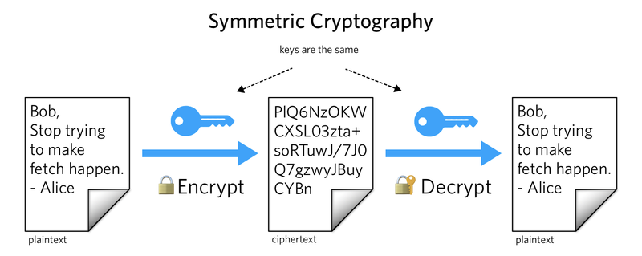
非对称加密
公钥和私钥成对使用，并且在数学上相关：
- 公钥可以公开，私钥必须由拥有者自己保管；
- 用于加密时，通常是公钥加密、私钥解密；
- 用于签名时，通常是私钥签名、公钥验签。
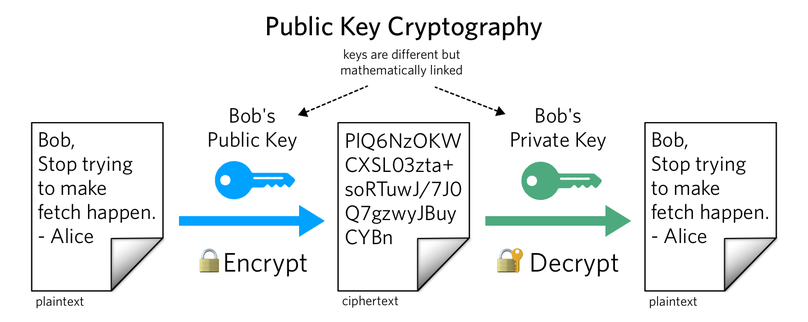
加解密示例
1、使用openssl创建一个私钥：
1 | openssl genpkey -algorithm RSA -outform PEM -out private_key.pem |
2、创建对应的公钥：
1 | openssl rsa -in private_key.pem -outform PEM -pubout -out public_key.pem |
3、使用公钥对文件进行加密：
1 | openssl rsautl -encrypt -inkey public_key.pem -pubin -in plain_text -out encrypted_text |
4、使用私钥对密文进行解密：
1 | openssl rsautl -decrypt -inkey private_key.pem -in encrypted_text -out decrypt_text |
rsautl在 OpenSSL 3.x 中已废弃，实际使用时更建议通过pkeyutl并显式指定安全填充方式，例如 OAEP：
1 | openssl pkeyutl -encrypt -pubin -inkey public_key.pem -in plain_text -out encrypted_text \ |
另外，非对称加密一般不直接加密大文件。真实协议通常使用混合加密：先用非对称算法协商或加密一个对称密钥，再用对称加密算法加密业务数据。
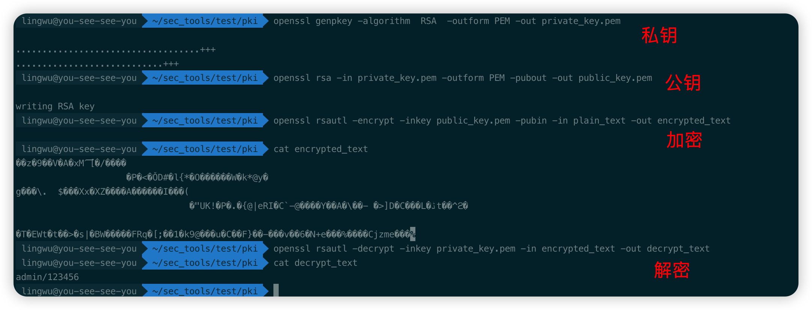
哈希函数
哈希函数是一个具有以下输入和输出的数学函数 H(X)=Y：
- H: 哈希函数，其输入参数为X，输出为Y
- X: 哈希方法的输入，可以是任意长度的任意数据
- Y：哈希方法的输出，是一段固定长度的二进制数据，常见长度有 256、384、512 bit 等
哈希函数不是加密算法，因为它没有“解密”过程。密码学哈希函数通常关注以下特征：
- 确定性：相同输入永远得到相同输出
- 单向性：给定
Y很难反推出任意一个满足H(X)=Y的输入X - 抗第二原像：给定一个输入
X1，很难找到另一个不同输入X2，使H(X1)=H(X2) - 抗碰撞：很难找到任意两个不同输入
X1、X2，使它们的哈希值相同 - 雪崩效应：输入发生极小变化，输出也会发生明显变化
数字签名
非对称算法->数字签名
非对称加密是使用公钥进行加密，对密文进行传输，最后由密钥拥有者使用私钥进行解密得到明文；
数字签名和“私钥加密、公钥解密”很像，但严格来说不是同一个操作。签名算法会把待签名数据、私钥、哈希算法和填充规则组合起来生成签名；验签算法使用公钥验证签名是否与数据匹配。这样可以证明两件事：
- 签名者持有对应私钥；如果公钥已通过证书等方式绑定到身份，就可用于身份确认
- 签名覆盖的数据没有被篡改，可用于完整性校验
非对称算法进行数字签名验证原理如下：
1 | 消息发送者生成密钥对： |
非对称&哈希->数字签名
仅使用非对称加密算法进行数字签名存在一定的缺点：
- 原始数据较大时，直接对完整消息做非对称签名和验签效率较低
- 部分签名算法本身只处理固定长度或受限长度的数据块
可通过将非对称和哈希结合使用来进行数字签名：
- 先对原始数据计算哈希值，再对哈希值进行签名；消息接收者重新计算原始数据的哈希值，并使用公钥验证签名是否匹配。原理如下：
1 | 消息发送者生成密钥对： |
实际算法中，sign和verify还会包含填充和编码步骤，例如 RSA-PSS、ECDSA、Ed25519 等算法的细节并不相同。验证成功只能说明“签名和公钥匹配、数据未被修改”，至于“这个公钥属于谁”，还需要依赖后面的数字证书和信任链来证明。
数字签名&验证过程
数字签名、验证的过程如下：
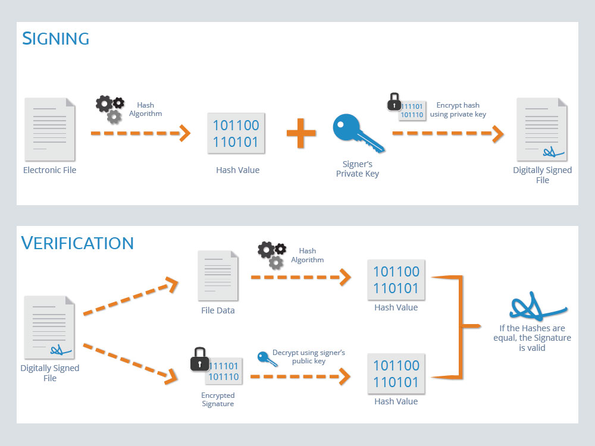
数字证书
数字证书标准
前面讲了：可以通过数字签名来证明一个人或者组织拥有一个公钥对应的私钥，因此我们可以把一个公钥看作一个数字身份标识，如果一个人可以发出使用该标识(公钥)对应的私钥签名的数据,则说明该用户是该数字身份标识的拥有者。
以上可类比成现实生活中的各类会员卡、比特币交易。需要注意，比特币地址通常不是公钥本身，而是由公钥经过哈希和编码后得到的标识；它仍然体现了“持有私钥才能花费对应地址资产”的思想。
大部分情况下，还需要证明公钥拥有者的真实身份，例如：姓名、邮箱、域名、组织等，因此会将这些信息随着公钥一起发布，也就形成了数字证书。更准确地说，数字证书是主体身份信息 + 主体公钥 + 颁发者信息 + 有效期 + 用途/约束扩展 + 颁发者签名的一组结构化数据。
RFC5280标准（https://www.ietf.org/rfc/rfc5280.txt）定义了X.509证书的标准格式：
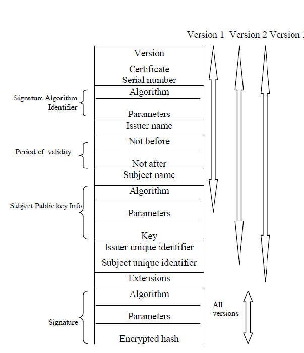
X.509 v3 证书中比较关键的字段和扩展包括：
- Version：证书版本，现代证书通常是 v3，因为 v3 才支持扩展字段
- Serial Number：证书序列号，由颁发者在自身范围内保证唯一，吊销时会用到
- Signature Algorithm：颁发者对证书签名时使用的算法。证书结构里通常会出现内外两处签名算法标识，二者应一致
- Issuer：颁发者名称
- Validity：证书有效期，包括
Not Before和Not After - Subject：证书主体名称
- Subject Public Key Info：证书主体的公钥及公钥算法
- Subject Alternative Name（SAN）：主体备用名称，HTTPS 域名校验主要看这里
- Key Usage / Extended Key Usage：限制证书用途，例如签名证书、服务器认证、客户端认证、代码签名等
- Basic Constraints：标记证书是否为 CA 证书，以及证书链深度限制
- Subject Key Identifier（SKI）/ Authority Key Identifier（AKI）：帮助构建证书链，定位上级证书
- Signature Value：颁发者对
TBSCertificate部分的数字签名。验签时不是对整个证书文件验签，而是对“待签名证书内容”验签
证书创建
向证书机构申请证书，需要生成 CSR（Certificate Signing Request，证书签名请求）文件：
1 | openssl req -newkey rsa:2048 -new -nodes -keyout my.key -out my.csr |
CSR 通常采用 PKCS#10 格式，里面包含主体名称、主体公钥、可选属性/扩展请求，并由申请者使用对应私钥签名。这个签名用于证明申请者确实持有该公钥对应的私钥，但不等于 CA 已经认可其身份；域名、组织、个人身份等仍需要 CA 按证书类型单独验证。
也可创建自签证书：
1 | openssl req -newkey rsa:2048 -nodes -keyout key.pem -x509 -days 365 -out cert.pem |
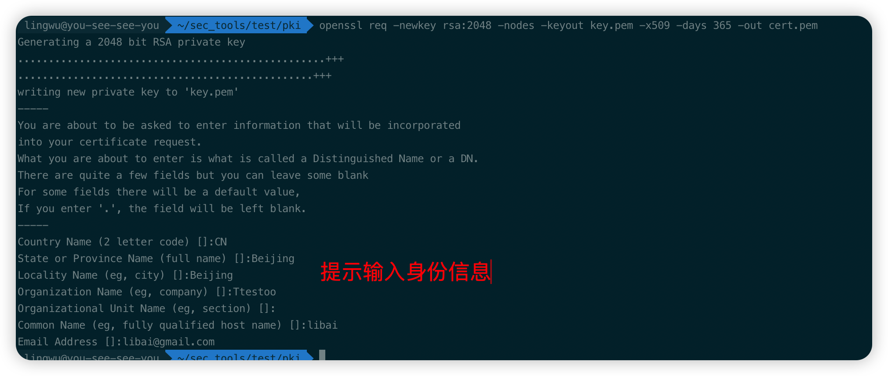
查看证书内容：
1 | openssl x509 -in cert.pem -text |
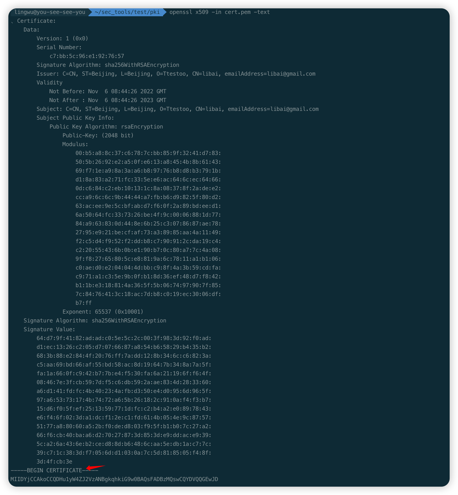
-----BEGIN CERTIFICATE-----前为解码后的证书内容，后半部分为采用PEM格式进行base64编码的原始证书文件内容，部分字段含义如下：
- Issuer：证书颁发机构
- Subject：证书拥有者
- Validity：证书有效期
- Subject Public Key Info：证书拥有者的公钥
- X509v3 extensions：证书用途、CA 约束、SAN、SKI/AKI 等扩展
- Signature Algorithm / Signature Value：签名算法及颁发者对证书内容生成的数字签名
自签名证书
生成数字证书时需要使用证书颁发机构（issuer）的私钥对证书进行数字签名，其中上述生成的证书中 Issuer 和 Subject 的内容相同，并且证书签名可被证书自身公钥验证通过，这种被称为自签名证书（签名者和拥有者为同一人）。严格来说，Issuer 和 Subject 相同只能说明它是 self-issued；只有签名确实由证书自身公钥对应的私钥产生，才是 self-signed；
可通过openssl verify命令来验证证书：
1 | openssl verify -CAfile cert.pem cert.pem |
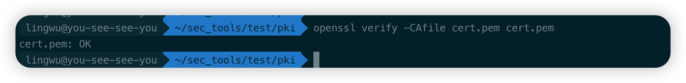
当证书过期时会验证失败：
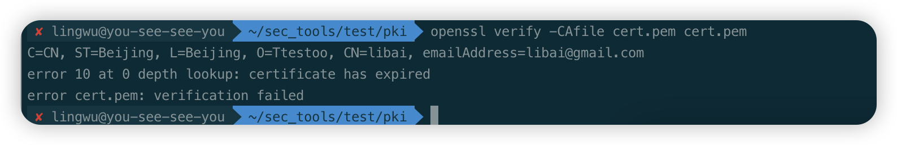
自签名证书无法解决证书拥有者和证书使用者之间的信任问题，一般只用于组织机构内部系统中；
证书机构
为解决证书拥有者和证书使用者之间的信任问题，在数字证书体系中引入了证书颁发机构，可类比为现实生活中的政府部门（由于政府部门的担保，身份证可信）；
被验证方信任的证书机构才是可信的。通过证书机构的私钥对证书进行签名，相当于证书机构用自己的信誉来保证证书中用户身份信息和公钥的真实性；用户使用证书机构的公钥验证证书签名后，可以确认“该证书确实由这个 CA 签发，且证书内容未被篡改”。
不过，证书验签成功不等于证书一定可用。完整的证书校验通常还要检查：
- 证书链是否能构建到本地信任的根证书
- 每一级证书的签名、有效期、Basic Constraints、Key Usage 是否满足用途要求
- 叶子证书的 SAN 是否匹配访问目标，例如 HTTPS 场景下域名必须匹配
- 证书是否已被吊销，可通过 CRL 或 OCSP 查询
- 证书使用的算法、密钥长度、签名算法是否仍被认为安全
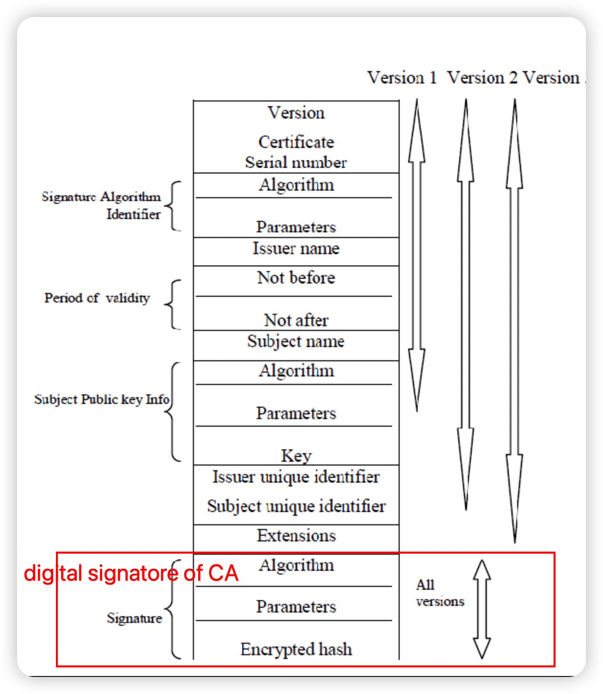
在证书验证时如何获取到证书机构的公钥？
证书机构会为自己颁发一个自签名证书，称为证书机构的根证书。操作系统、浏览器会把受信任的根证书内置到信任库中；手工导入 Burp 证书，本质上就是把 Burp 作为本机信任的 CA，因此它才能为拦截到的 HTTPS 站点动态签发本机认可的证书。
CRL 和 OCSP 都用于查询证书是否被吊销。CRL 是 CA 定期发布的吊销列表，OCSP 是验证方按证书序列号向 OCSP 服务查询状态。真实客户端还会受缓存、软失败策略、OCSP Stapling 等因素影响，所以“没有查到吊销”不总是等价于“证书一定有效”，它只是证书路径验证中的一个条件。
数字证书签发验证过程
Alice想发送一个合同文件给Bob，为了向Bob表明该合同文件是Alice发出的，Alice需要向证书机构申请签发一个合法证书。Alice使用自己的私钥对合同文件进行数字签名，并把证书机构签发的证书一起发送给Bob，过程如下：
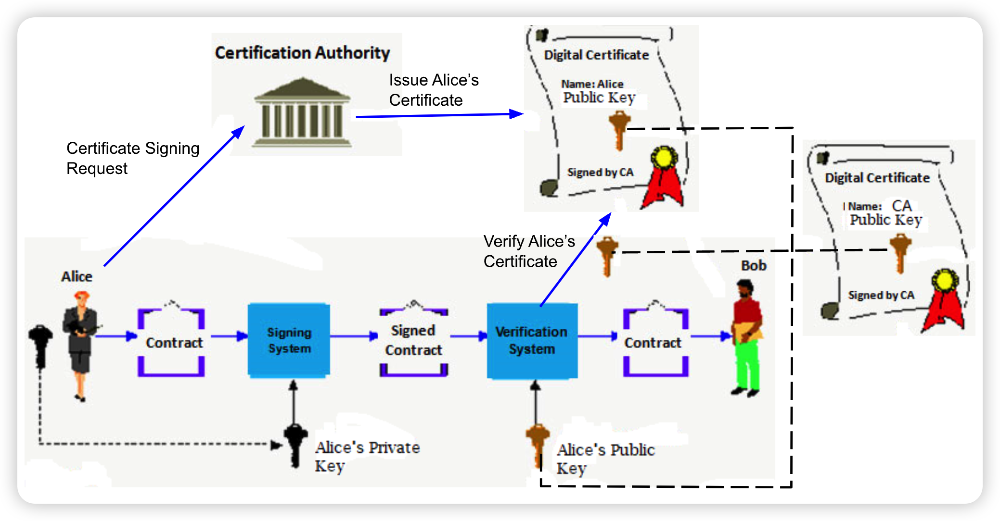
- Alice在本地生成Private Key和CSR（Certificate Signing Request）。CSR中包含了Alice的公钥和姓名，机构、地址等身份信息，并使用Alice的私钥对 CSR 内容签名。
- Alice使用该CSR向证书机构发起数字证书申请。
- 证书机构验证Alice的身份和 CSR 签名后，使用CSR中的信息生成数字证书，并使用 CA 证书对应的私钥对该证书签名。真实公网 PKI 中通常由中间 CA 签发用户证书，而不是根 CA 直接签发。
- Alice使用自己的Private Key对合同进行签名，然后将签名后的合同和自己的证书一起并发送给Bob。
- Bob使用操作系统中自带的证书机构根证书中的公钥来验证Alice证书中的签名，并检查证书链、有效期、用途、吊销状态等条件。
- Alice的证书验证成功后，Bob使用Alice证书中的公钥来验证合同中数字签名。
- 合同数字签名通过验证，可以证明该合同为Alice本人发送，并且中间未被第三方篡改过。
通过openssl进行试验上述流程：
- 模拟一个证书机构，创建证书机构的私钥和自签名根证书
1 | openssl req -newkey rsa:2048 -nodes -keyout rootCA.key -x509 -days 365 -out rootCA.crt |
这个命令适合演示流程。真实 CA 根证书应生成 v3 CA 证书，并包含basicConstraints = critical,CA:true、keyUsage = critical,keyCertSign,cRLSign、SKI 等扩展。
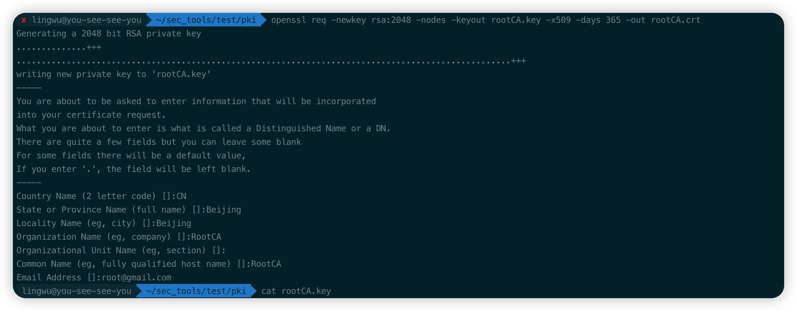
- 创建Alice的私钥和CSR（证书签名请求），其中CSR中包含了Alice的公钥、姓名、机构等信息
1 | openssl req -new -nodes -keyout Alice.key -out Alice.csr |
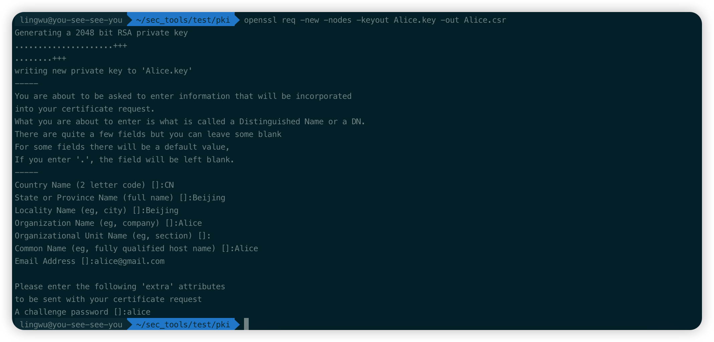
- 使用证书机构的私钥、根证书和Alice的CSR为Alice创建数字证书
1 | openssl x509 -req -in Alice.csr -CA rootCA.crt -CAkey rootCA.key -CAcreateserial -out Alice.crt |
该命令未给 Alice 证书添加 Key Usage、Extended Key Usage、SAN 等扩展，只适合演示签发关系。若用于 HTTPS、客户端认证或代码签名，应通过扩展配置明确证书用途和主体名称。
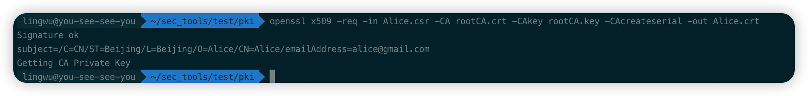
- Alice使用私钥对合同文件进行签名，然后把签名后的合同和Alice的数字证书一起发给Bob
1 | echo 'test from alice' > alice_text |
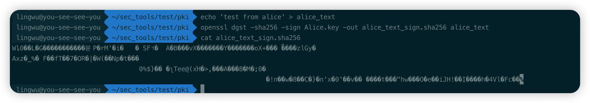
- Bob收到合同后，验证Alice的数字证书是否合法
1 | openssl verify Alice.crt |
注意，由于证书机构的根证书是自己生成的自签名证书，并未内置到操作系统中，所以直接openssl verify会验证失败：
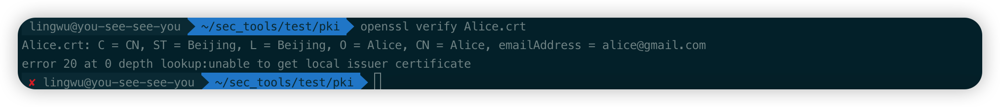
可通过-CAfile指定验证时使用的证书机构的根证书或者将此根证书内置到操作系统中：
openssl verify -CAfile rootCA.crt Alice.crt
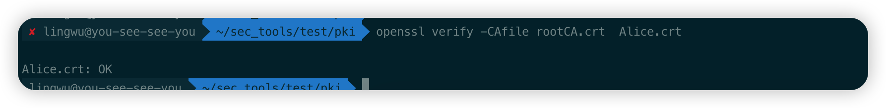
这里openssl verify主要验证证书链和证书有效期等通用条件。真实应用中还需要根据业务场景继续验证身份，例如 HTTPS 客户端必须确认访问域名匹配证书 SAN；如果是文档签名，也要确认 Subject、证书用途和签名者身份符合业务预期。
- Bob验证了Alice的证书后，使用Alice证书中的公钥对合同的数字签名进行验证，从而证明该合同确实为Alice发过来的
1 | 从Alice的证书中导出Alice的公钥 |
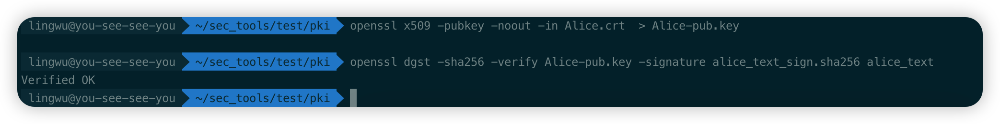
证书链
中间证书：
- 由于根证书非常重要，如果根证书密钥泄漏则会影响签发的所有用户证书；
- 通常情况下证书机构不会直接使用根证书签发用户证书，而是会使用根证书签发多个中间证书，然后使用中间证书签发用户证书，这样如果某个中间证书泄漏则可以废弃掉该中间证书，仅影响该中间证书签发的用户证书，影响范围大幅缩小；
证书链：
- 根证书、中间证书（可有多个层级）、用户证书共同组成证书链；
- 其中证书的生成验证过程类似，以三层证书举例：
- 证书生成过程
- 证书机构生成自签名根证书
- 证书机构采用根证书对应的私钥签名中间证书
- 证书机构采用中间证书对应的私钥签名用户证书
- 用户采用用户证书对应的私钥签名用户数据
- 证书验证过程
- 采用中间证书中的公钥验证用户证书的签名
- 采用根证书中的公钥验证中间证书的签名
- 采用用户证书中的公钥来验证数据中的签名
- 证书生成过程
- 每一个下级证书都有其上级证书的
Issuer DN（Distinguished Name），在证书验证时会结合 Issuer DN、AKI/SKI 等信息查找上级证书。DN 只是路径构建线索之一，不能单独作为信任依据：
证书链验证和业务数据签名验证是两个步骤。证书链验证用于确认“这个用户证书里的公钥可信”；业务数据签名验证才使用该用户公钥去确认“这份数据确实由对应私钥签名且未被篡改”。根证书是否可信来自本地信任库，而不是因为它在链中自签名。
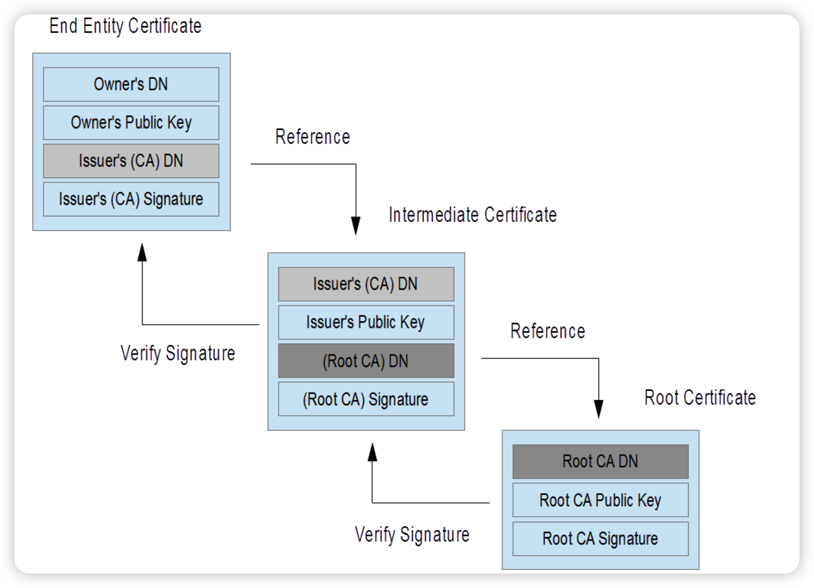
openssl试验三层证书链：
- 生成根证书和对应的私钥
1 | openssl req -newkey rsa:2048 -nodes -keyout rootCA.key -x509 -days 365 -out rootCA.crt |
同样，这里是简化实验命令。更严谨的根证书应通过 OpenSSL 配置显式加入 v3 CA 扩展，避免后续签发中间证书时缺少 SKI、Basic Constraints、Key Usage 等信息。
- 生成中间证书私钥和CSR
1 | openssl req -new -nodes -keyout intermediate.key -out intermediate.csr |
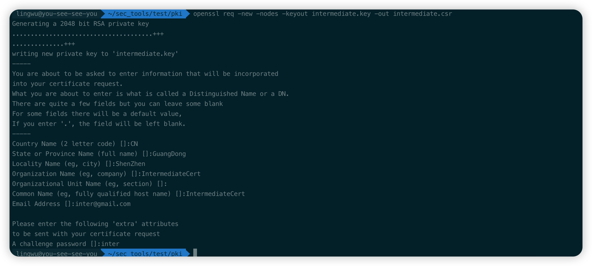
- 使用根证书签发中间证书
中间证书需在证书的basicConstraints中设置CA:true标签，来标明该证书属于证书机构的证书，可用来签发和验证用户证书；同时还应在keyUsage中包含keyCertSign，否则即使签名数学上能验证通过，也不应被当作 CA 证书使用。这里采用openssl ca命令配置；
首先创建openssl ca命令使用的配置文件intermediateCA.conf：
(https://pki-tutorial.readthedocs.io/en/latest/expert/component-ca.conf.html)
1 | [ ca ] |
如果写成authorityKeyIdentifier = keyid:always，但上级证书没有 Subject Key Identifier，OpenSSL 可能会报错。解决方式是为根证书生成包含 SKI 的 v3 CA 证书，或使用上面这种允许回退到 issuer/serial 的写法。
openssl ca使用文本数据库记录生成的证书，这里先创建一个数据库索引文件：
1 | mkdir db |
生成中间证书：
1 | openssl ca -config intermediateCA.conf -days 365 -create_serial -in intermediate.csr -out intermediate.crt -extensions ca_ext -notext |
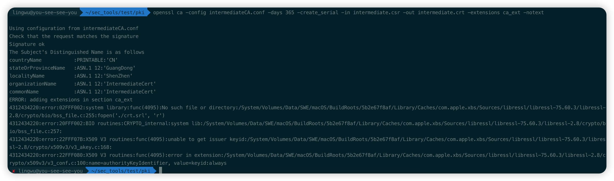
- 生成Alice的私钥和CSR
1 | openssl req -new -nodes -keyout Alice.key -out Alice.csr |
- 使用中间证书签发Alice的用户证书
1 | openssl x509 -req -in Alice.csr -CA intermediate.crt -CAkey intermediate.key -CAcreateserial -out Alice.crt |
生产级用户证书同样应添加用途扩展，例如服务端证书应包含extendedKeyUsage = serverAuth和正确的 SAN，客户端证书应包含clientAuth。
- Bob对Alice的用户证书进行验证
需同时指明根证书和中间证书：
1 | openssl verify -CAfile rootCA.crt -untrusted intermediate.crt Alice.crt |
也可以把多个中间证书放到同一个非信任链文件中，再通过-untrusted提供给 OpenSSL：
1 | cat intermediate.crt > untrusted-chain.crt |
真实场景下根证书来自本地信任库，服务端一般只发送叶子证书和中间证书，不发送根证书。验证方以本地信任锚为起点，结合对端提供的中间证书构建证书链。
交叉认证
在签发证书时，多个CA可为同一个主体和公钥签发不同证书。因此，同一个主体公钥可以出现在多张由不同上级证书签发的证书中，验证方也可能构建出多条合法证书链：
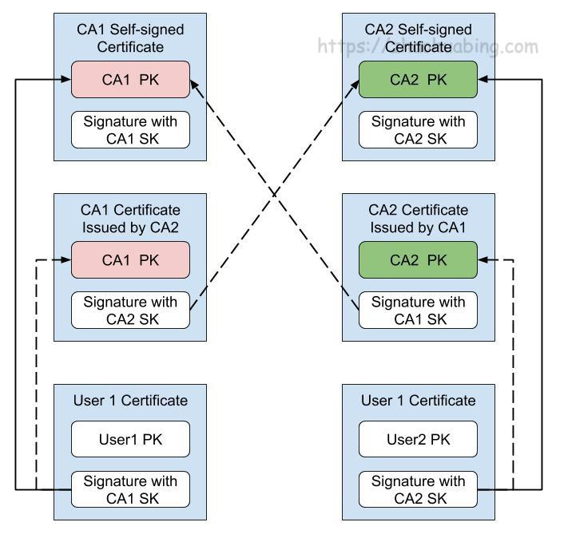
在上图中，我们采用了CA1来为User1签发证书，CA1有一个自签名的根证书，同时采用CA2的根证书为CA1签发了一个中间证书，这样User1就处在了两条合法的证书链上（分别用实线和虚线表示）。
- User 1 Certificate -> CA1 Self-signed Certificate
- User 1 Certificate -> CA1 Certificate Issued by CA2 -> CA2 Self-signed Certificate
这两条链都是合法的，都可以对User1的证书进行验证。同理，也可以用CA1为CA2签发一个中间证书，使CA2颁发的用户证书也处于两条合法的证书链上。这种方式被称为交叉认证。通过交叉认证，可以在两个CA之间建立互信关系，也可以在根证书迁移期间让新老信任链并行工作。
CA根证书更新：
通过这种方式还可以实现CA的根证书更新。进行根证书更新时，CA生成一对新的密钥对和根证书，然后用新的私钥为老的公钥签名生成一个交叉证书，并用老的私钥为新的公钥签名生成一个交叉证书。这样，无论客户端只信任旧根还是只信任新根，都可能在过渡期构建出可用证书链，从而实现CA新老根证书的平滑过渡。
概念
SSL
SSL/TLS
Secure Sockets Layer，新版本叫 TLS。现在通常应使用 TLS 1.2 或 TLS 1.3；SSL 2.0、SSL 3.0 以及早期 TLS 版本已经不应继续使用。
在 HTTPS/TLS 中，证书主要用于证明服务端身份，并参与握手中的密钥协商或签名认证。真正加密业务数据的一般不是证书里的公钥，而是握手后协商出来的对称会话密钥。
以访问 https://example.com 为例，客户端收到服务端证书链后，通常会做这些检查：
- 证书链能否连接到本地信任库中的根证书
- 链中每一级证书的签名、有效期、CA 约束和用途约束是否正确
- 叶子证书的 SAN 是否包含
example.com - 证书是否被吊销，算法和密钥长度是否满足当前安全要求
- 服务端是否持有叶子证书公钥对应的私钥
最后一项不是靠“看证书”完成的，而是在 TLS 握手中证明。例如 TLS 1.3 使用临时密钥交换生成会话密钥，服务端再用证书对应的私钥对握手上下文签名，客户端用证书中的公钥验签。这样既确认了服务端身份，又避免直接用长期证书密钥加密业务数据。老式 TLS 1.2 中曾存在 RSA 密钥交换模式，但它不具备前向安全性，现代配置一般使用 ECDHE/DHE 类临时密钥交换。
OpenSSL
SSL/TLS 本质上是一组协议规范，OpenSSL 是常见的开源实现之一，同时也提供了大量通用密码学和证书处理命令。
证书
标准
X.509证书标准主要定义了证书中应该包含哪些内容，可参考 RFC5280。HTTPS 证书还会受浏览器根证书计划、CA/B Forum Baseline Requirements、域名匹配规则等约束。
编码格式
PEM
- Privacy Enhanced Mail，以
-----BEGIN...开头，-----END...结尾，中间内容通常是 DER 二进制数据的 Base64 编码；
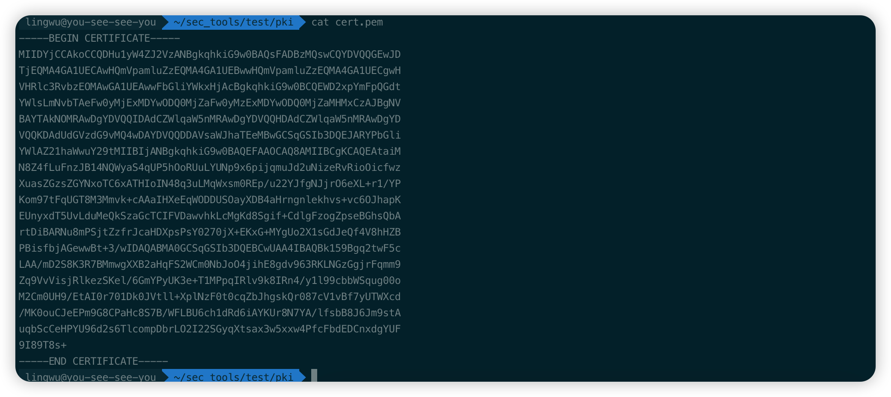
- 查看PEM格式证书内容：
1 | openssl x509 -in cert.pem -text -noout # 不输出原始PEM内容 |
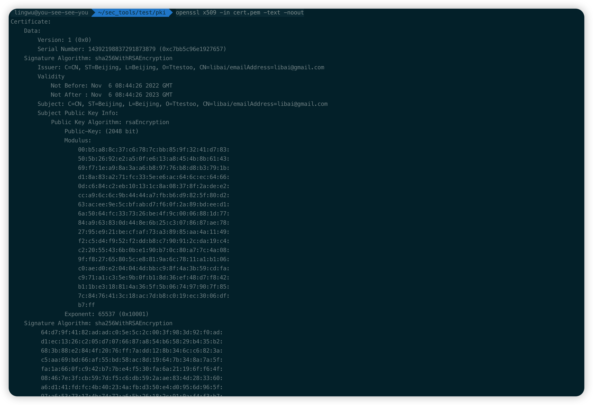
- Apache和*NIX服务器偏向于使用这种编码格式
DER
- Distinguished Encoding Rules，ASN.1 的二进制编码格式，直接打开通常不可读
- 查看DER格式证书信息：
1 | openssl x509 -in cert.der -inform der -text -noout |
- DER也常见于 Java、Windows 等生态中的证书文件
证书编码转换
PEM转为DER：
1 | openssl x509 -in cert.crt -outform der -out cert.der |
DER转为PEM：
1 | openssl x509 -in cert.crt -inform der -outform pem -out cert.pem |
要转换私钥文件可使用openssl pkey，转换CSR可使用openssl req，核心思路都是指定输入格式-inform和输出格式-outform：
1 | openssl pkey -in private.key -outform der -out private.der |
证书文件扩展名
PEM
常见 PEM 文件以文本形式保存证书、CSR、公钥或私钥。仅凭扩展名无法判断里面具体是什么对象，需要看BEGIN行，例如BEGIN CERTIFICATE、BEGIN PRIVATE KEY、BEGIN CERTIFICATE REQUEST。
DER
证书文件格式有PEM和DER两种，但文件扩展名并不止此两种；
CRT
常见于*NIX系统，可为PEM或DER编码，由文件内容来区分；
CER
常见于Windows系统，可为PEM或DER编码，由文件内容来区分；
KEY
通常存放一个公钥或者私钥，并非X.509证书，编码可能为PEM或DER；
查看KEY：
1 | openssl pkey -in mykey.key -text -noout |
如果明确知道是 RSA 私钥，也可以使用openssl rsa；更通用的方式是openssl pkey，因为现在私钥也可能是 EC、Ed25519 等类型。
CSR
Certificate Signing Request，证书签名请求，并不是一个证书，而是向证书颁发机构获得签名证书的申请，核心内容是一个公钥和一些身份信息；
查看CSR：
1 | openssl req -noout -text -in my.csr |
PFX/P12
PFX/P12通常指 PKCS#12 文件。对*nix服务器来说，一般CRT和KEY是分开存放在不同文件中的，但Windows的IIS常将证书、私钥和证书链一起放在一个PFX/P12文件中；
PFX通常会有一个”提取密码”，想把里面的东西读取出来就需要提供提取密码。它是二进制容器格式，不是普通文本 PEM；
将PFX转换为PEM编码：
1 | openssl pkcs12 -in for-iis.pfx -out for-iis.pem -nodes |
这个命令会提示输入提取密码，其中生成的for-iis.pem就是可读的文本。
生成pfx：
1 | openssl pkcs12 -export -in certificate.crt -inkey privateKey.key -out certificate.pfx -certfile CACert.crt |
其中CACert.crt通常是证书链中的CA证书，有的话也通过-certfile参数一起带进去。注意，生产环境里通常放入中间证书即可，根证书一般由客户端本地信任库提供。PFX可以理解为一个同时保存证书、私钥和证书链的密钥库文件
JKS
Java KeyStore，是 Java 生态中常见的密钥库格式，跟OpenSSL关系不大。可以利用 Java 的keytool工具将PFX/P12转为JKS，当然keytool也能直接生成JKS。较新的 Java 版本也支持直接使用 PKCS#12 作为 keystore 格式
参考文章
- RFC 5280: Internet X.509 Public Key Infrastructure Certificate and CRL Profile
- RFC 2986: PKCS #10 Certification Request Syntax
- RFC 8446: The Transport Layer Security Protocol Version 1.3
- https://www.zhaohuabing.com/post/2020-03-19-pki/
- https://www.twilio.com/blog/what-is-public-key-cryptography
- Hash Pointers and Data Structures
- Digital Signature and Public Key as Identities
- What is an intermediate certificate?
- wikipedia X.509
- 证书相关概念：https://www.cnblogs.com/guogangj/p/4118605.html